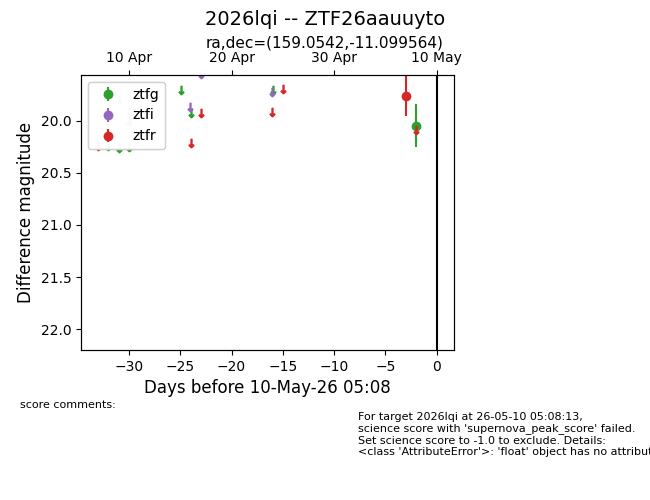
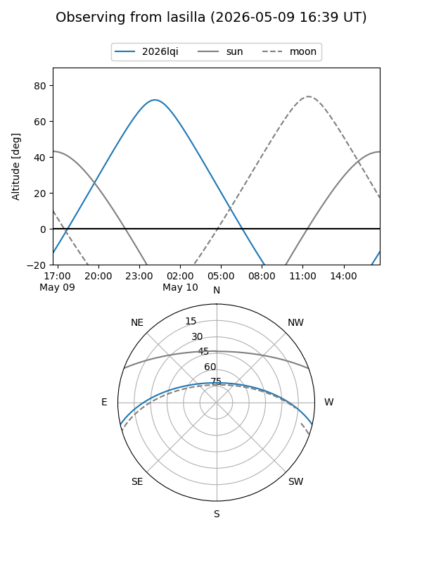
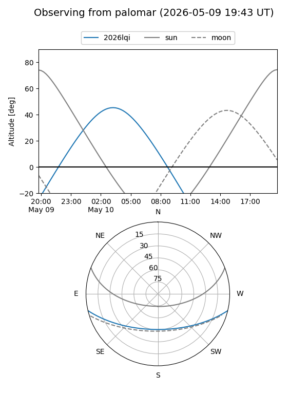

2026lqi
Target 2026lqi at 2026-05-10 05:09
Aliases and brokers:
FINK: link
Lasair: link
ALeRCE: link
TNS: link
YSE: link
alt names
ZTF26aauuyto (ztf,fink_ztf)
2026lqi (tns,yse)
Coordinates:
equatorial (ra, dec) = 159.0542,-11.09956
equatorial (HMS+DMS) = 10:36:13.00,-11:05:58.43
galactic (l, b) = (257.7833,+39.63567)
Flags:
Photometry:
last ztfg=20.05, ztfr=19.76
1 ztfg, 1 ztfr detections
Lightcurve

Visibility


Additional plots